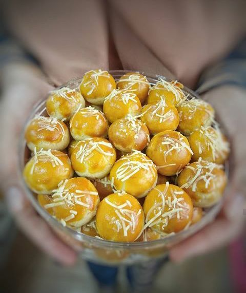

Profil Produk

Delight Cookies
Selamat datang di Delight Cookies, tempat di mana cita rasa dan
kualitas bertemu untuk menciptakan kenangan manis dalam setiap
gigitan. Kami hadir dengan dedikasi untuk menyajikan kue-kue terbaik
yang tak hanya menggugah selera, tetapi juga membawa kehangatan dan
kebahagiaan pada setiap momen spesial Anda.
Tentang Produk

Beraneka Ragam Kue Kering:
Usaha Delight Cookies hadir untuk memenuhi kebutuhan masyarakat akan
kue-kue berkualitas tinggi, terutama pada momen-momen spesial
seperti Lebaran. Dengan berbagai produk unggulan seperti nastar,
kastengel, putri salju, dan sagu keju, Delight Cookies berkomitmen
untuk menyajikan cita rasa terbaik dengan menggunakan bahan-bahan
berkualitas dan proses pembuatan yang higienis.
Kualitas Bahan dan Rasa:
Kami di Delight Cookies selalu berusaha untuk menghadirkan kue-kue
yang tidak hanya enak tapi juga menyehatkan. Dengan menggunakan
bahan-bahan alami dan berkualitas, kami memastikan bahwa setiap kue
yang Anda nikmati adalah yang terbaik. Selamat menikmati berbagai
varian kue dari Delight Cookies yang kaya rasa dan penuh cinta.
| Daftar kue |
Deskripsi |
HARGA |
| Nastar |
Rasa manis dan asam dari selai nanas yang lembut berpadu
dengan tekstur kue yang lumer di mulut.
|
Rp.80.000 |
| Kastengel |
Kue gurih dengan keju yang kaya akan rasa, sempurna untuk
pecinta keju sejati.
|
Rp.80.000 |
| Putri Salju |
Kue lembut dengan taburan gula halus yang memberikan sensasi
manis dan lembut di setiap gigitan.
|
Rp.90.000 |
| Sagu Keju |
Kue yang renyah dan gurih dengan aroma keju yang kuat,
memberikan rasa unik yang sulit dilupakan.
|
Rp.85.000 |
|
Dokumentasi

Di Delight Cookies, kami percaya bahwa kunci dari sebuah kue yang
sempurna terletak pada bahan-bahan berkualitas dan kombinasi rasa
yang harmonis. Setiap bahan yang kami pilih bukan hanya sekadar
komponen, melainkan fondasi dari kelezatan yang kami sajikan kepada
Anda.
Fitur Unggulan:
1. Tepung Terigu Pilihan: Kami menggunakan tepung terigu berkualitas
tinggi yang memberikan tekstur lembut dan renyah pada setiap kue
kami.
2. Mentega dan Margarin Premium: Perpaduan mentega dan margarin
premium memberikan rasa gurih dan aroma yang menggugah selera.
3. Gula Halus: Gula halus kami pilih dengan seksama untuk memastikan
kue memiliki manis yang pas dan merata.
4. Susu Bubuk: Susu bubuk memberikan kekayaan rasa dan kelembutan
ekstra pada adonan kue kami.
5. Selai Nanas Homemade: Selai nanas buatan sendiri, dengan rasa
manis dan asam yang seimbang, adalah kunci dari kelezatan kue nastar
kami.
6. Kuning Telur Segar: Kuning telur segar memberikan warna cantik
dan tekstur lembut pada kue kami.

Diatas contoh smartphone yang kita tawarkan, dapat dipilih sesuai
kebutuhan anda.